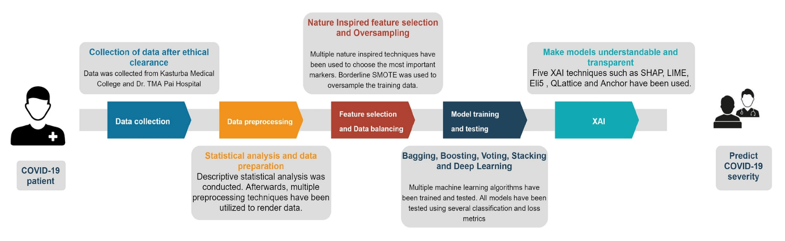
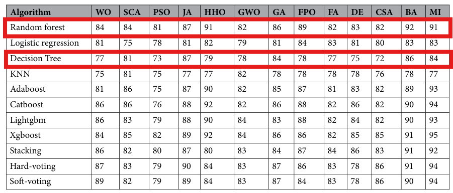
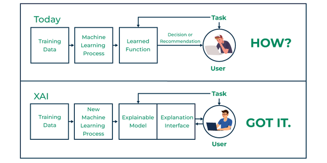

Objective
The goal is to predict severity using patient data and provide explanations for predictions using Explainable AI (XAI).
Workflow
The workflow includes data preprocessing, feature selection, model training, and result explanation. Techniques like Random Forest and Decision Tree are applied to predict patient outcomes with high accuracy and interpretability.
Techniques Used in Prediction
Feature Selection
Chose important clinical markers using techniques like Mutual Information, bat algorithm, fower pollination algorithm etc.
Machine Learning Models
Machine learning, a type of artificial intelligence, enables software to predict outcomes based on past data. Used Random Forest, Decision Tree, Boosting, Stacking, and Voting etc.
Deep Learning Models
Deep learning models used include DNN for complex patterns, 1D-CNN for tabular data, and LSTM for sequential or time-series data analysis.
Machine Learning Models
Random Forest
Advantages:
- High Accuracy
- Strong Resistance to Overfitting
- Good Data Handling Capability
- Feature Importance
Disadvantages:
- High Computational Cost
- Poor Interpretability
Decision Tree
Advantages:
- Fast Execution
- Easy to Understand
- Simple Data Preparation
Disadvantages:
- Overfitting
- Unstable
- No Feature Interactions
- Too Many Categories
Applications in COVID-19
Decision Tree - Risk Stratification
Decision Tree can be used in rapid patient risk stratification (ex: COVID-19 risk assessment) to predict whether a patient is at high risk based on symptoms, oxygen saturation levels, and age. Compared to Random Forest, Decision Tree provides simpler and more interpretable decision paths, making it easier for healthcare providers to quickly understand and act on the results in time-sensitive or resource-limited situations.
Random Forest - Medical Diagnosis
Random Forest can be used in disease diagnosis (ex: cancer detection) to predict whether a patient has a certain disease based on multiple pathological features. Compared to a single decision tree, Random Forest can reduce errors caused by fluctuations in individual features and provide more stable predictions.
Optimization Algorithm
The data shows that Random Forest consistently outperforms Decision Tree across various metrics, particularly in CSA, PSO, and HHO evaluation methods. By integrating multiple decision trees, Random Forest improves stability and accuracy with minimal score fluctuations across feature selection methods. In contrast, Decision Tree, while simple and easy to interpret, performs worse in PSO and CSA and shows greater variability in HHO, reflecting its sensitivity to data changes. Random Forest is ideal for scenarios requiring high accuracy, while Decision Tree suits quick modeling and interpretation.
What is Explainable AI
Explainable AI (XAI) refers to AI systems that are designed to be transparent, interpretable, and understandable by humans.
Why do we need XAI
Reasons:
- Trust and Acception
- Compliance with Regulations
- Fairness and Bias Detection
- Learning and improvement
Future Outlook
- Global Dataset Expansion
- Real-Time Applicatioon in Healthcare
- Integration of Multimodal Data
- Adaptive AI for Evolving Diseases